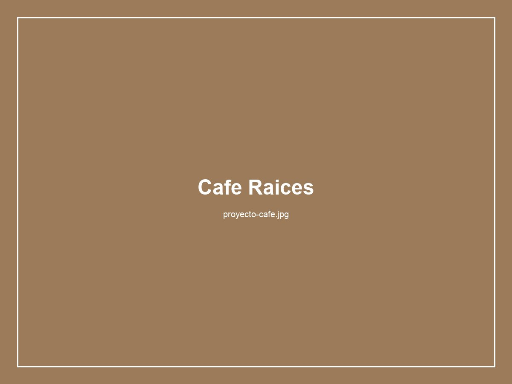
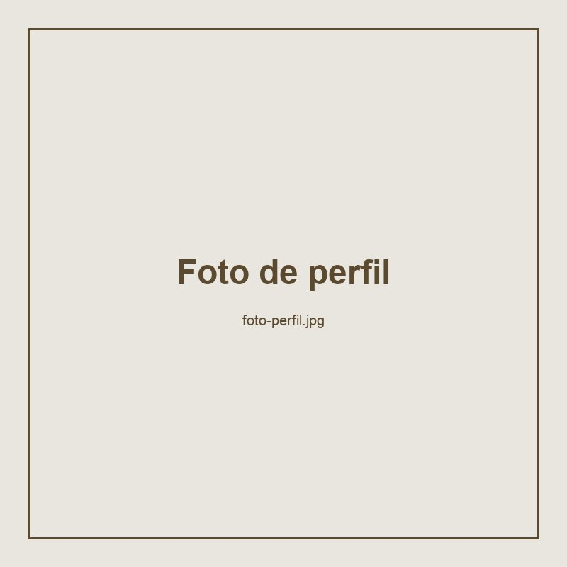
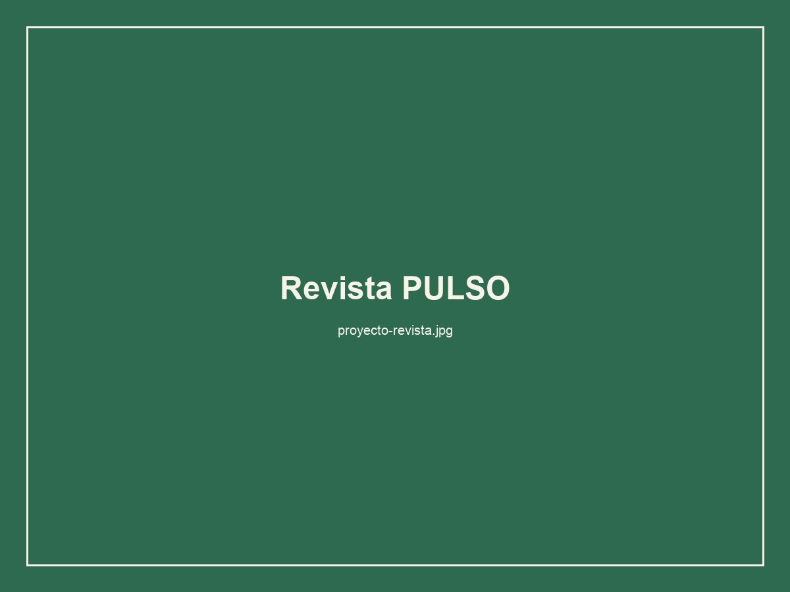
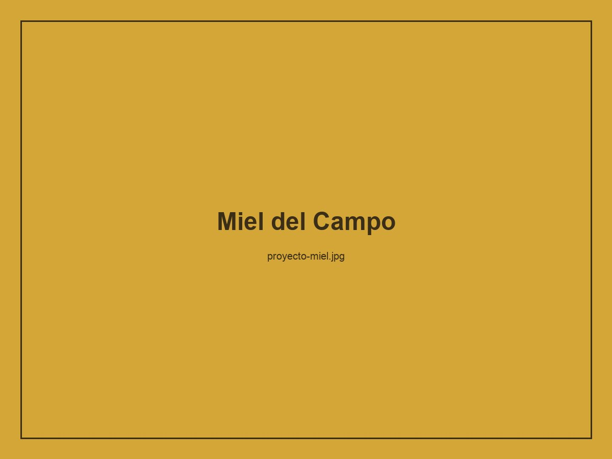

Identidad visual: Cafe Raices
Sistema de identidad completo para una cafeteria artesanal de Bogota. Paleta tierra, tipografia serif, aplicaciones en empaques y comunicacion digital.
Disenadora grafica
Soy estudiante de diseno grafico de la Fundacion Universitaria del Area Andina. Me apasiona la identidad visual, la tipografia y el diseno editorial. Actualmente exploro el diseno web como una extension natural de mi practica.
Me inspiran los sistemas de diseno, las grillas editoriales y los proyectos que tienen un proposito claro. Disfruto cuando el diseno resuelve un problema, no solo decora.


Sistema de identidad completo para una cafeteria artesanal de Bogota. Paleta tierra, tipografia serif, aplicaciones en empaques y comunicacion digital.

Diagramacion de una revista cultural independiente. Exploracion de grillas de 3 columnas, tipografia mixta serif/sans, jerarquia editorial clara.

Diseno de empaque para una marca de miel artesanal. Ilustracion botanica, paleta natural, etiqueta con informacion de origen.
Adobe Illustrator
Adobe InDesign
Adobe Photoshop
Figma
Identidad visual
Diseno editorial
Tipografia